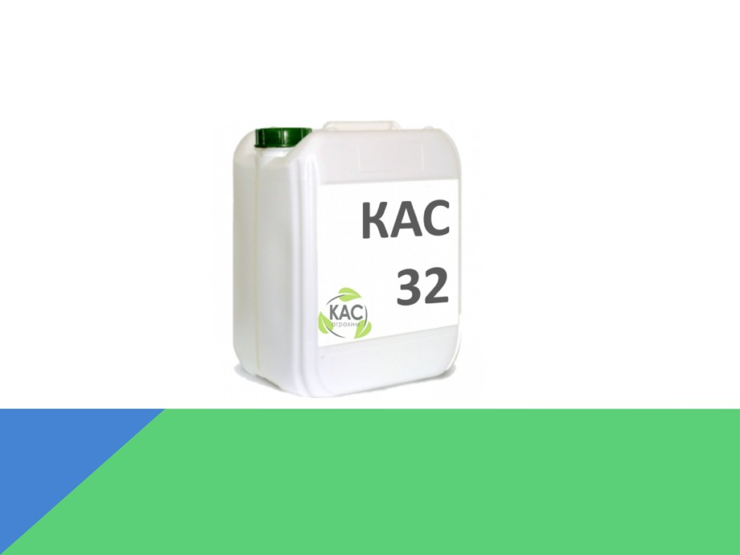

ЧТО ТАКОЕ ЗЕРНОВЫЕ КУЛЬТУРЫ
Зерновые культуры
-важнейшая группа
возделываемых
растений, дающих
зерно, основной
продукт питания
человека, сырье для
многих отраслей
промышленности и
корма для
сельскохозяйственн
ых животных
ЧТО ТАКОЕ ПОЖНИВНЫЕ ОСТАТКИ
Пожнивные
остатки - корни,
нижние частисте
блей, опавшие
листья, всё, что
остается после сбо
ра урожая..
ЧТО ТАКОЕ ДИСКОВАНИЕ ПОЧВЫ
Дискование
почвы -
обработка верхнего
слоя почвы дисков
ымиорудиями (дис
ковыми боронами,
лущильниками и д
р.).
ГЛАВНАЯ ПРОБЛЕМА ПРИ УБОРКЕ
УРОЖАЯ
Завершение уборки урожая для аграриев всегда
ознаменуется общей проблемой - пожнивными
остатками, напрямую влияющими на ход полевых
работ во время посевной кампании. Стараясь
сэкономить время и деньги, фермеры порой идут на
радикальные меры и находят решение в сжигании
соломы, что на сегодняшний день является
административным правонарушением. Оправдан
ли такой риск? Естественно нет! Подобная практика
приводит к колоссальным потерям жизненно
необходимых питательных веществ в почве, таких
как углерод и азот, на возмещение которых уже
весной пойдут не малые средства. Однако есть и
другие решения этой проблемы.
ЦЕЛЬ НАШЕЙ РАБОТЫ
Изучить процесс дискования, его
составляющие и выделить два
эффективных метода совершенствования
технологии протекания данного процесса.
МЕТОД А
ДИСКОВАНИЕ С ВНЕСЕНИЕМ
МИКРОБИОЛОГИЧЕСКОГО
ПРЕПАРАТА «БИОКОМПОЗИТ-
КОРРЕКТ»
Биокомпозит-
коррект - это
микробиологически
й препарат
последнего
поколения,
представляющий
собой консорциум в
культуральной
жидкости
хозяйственно
ценных штаммов
нескольких видов
полезных бактерий.
Биокомпозит-коррект одновременно:
• восстанавливает полезную микрофлору почвы;
• ускоряет разложение соломы и пожнивных остатков;
• подавляет рост и развитие фитопатогенов;
• переводит нерастворимые соединения фосфора в усвояемые
растениями формы;
• фиксирует атмосферный азот;
• стимулирует рост и развитие растений.
Биокомпозит-коррект технологичен, его можно применять
различными способами:
• обрабатывать почву и растительные, пожнивные остатки летом-осенью
после уборки
• обрабатывать почву весной перед севом и во время сева
• проводить предпосевную обработку семян и посадочного материала
• опрыскивать посевы в период вегетации.
Биокомпозит-коррект -
эффективный ускоритель
биодеструкции пожнивных
остатков.
В сравнительных испытаниях
различных ускорителей
биодеструкции соломы после
уборки озимой пшеницы в
Тамбовской области в августе
2015 года, Биокомпозит-коррект
в норме 2,0 л/га оказался одним
из лучших по результатам,
превзойдя многие известные
препараты как на основе
гриба Trichoderma harziannum,
так и комплексные
бактериально-грибные
деструкторы. И это при
температурах более 25 оС в
условиях сильной почвенно-
воздушной засухи.

МЕТОД В
ДИСКОВАНИЕ С ВНЕСЕНИЕМ ЖИДКОГО
АЗОТНОГО УДОБРЕНИЯ «КАС-32»
КАС-32 - самый
эффективный источник азота
для разложения пожнивных
остатков.
Продукт содержит сразу три
формы азота - нитратную,
аммонийную и амидную, за
счет чего КАС-32 обеспечивает
пролонгированное питание
растений. Амидная форма
легко поглощается через
листовую пластину растения,
а аммонийная и нитратная -
корневой системой. В составе
продукта нет свободного
аммиака, благодаря чему
отсутствуют газообразные
потери в атмосферу при
внесении. Таким образом,
потери азота за счет
улетучивания и вымывания
значительно снижаются.
Самое главное
преимущество КАС-32,
особенно для южных
засушливых регионов,
- это жидкая форма.
КАС-32 смачивает
солому и более
равномерно
распределяется по
поверхности. Кроме
того, в отличие от
гранулированных
удобрений, жидкая
форма работает сразу
после нанесения, даже
тогда, когда влаги не
так много.
Таким образом, обработанные КАС-32 растительные
остатки лучше и быстрее разлагаются, не используя
при этом азот самой почвы. Такая технология
поддерживает естественные природные процессы,
способствуя обновлению почвенного плодородного
слоя, улучшению его структуры и водно-воздушных
свойств. Заботясь о почве, мы заботимся об урожае. В
преддверии уборочного сезона аграрии по достоинству
могут оценить возможности комплексной технологии
разложения пожнивных остатков, применив ее в своих
хозяйствах, и убедиться, что это не только решение
технических трудностей обработки полей, но еще и
возврат элементов питания в почву, обеспечение их
доступности растениям и подавление развития
патогенной микрофлоры
ИТОГИ
В данном проекте мы
выделили два эффективных
способа совершенствования
технологии заделки в почву
пожнивных остатков
зерновых культур и считаем,
что данные методы наиболее
эффективно влияют на
обработку почвы после
уборки урожая.